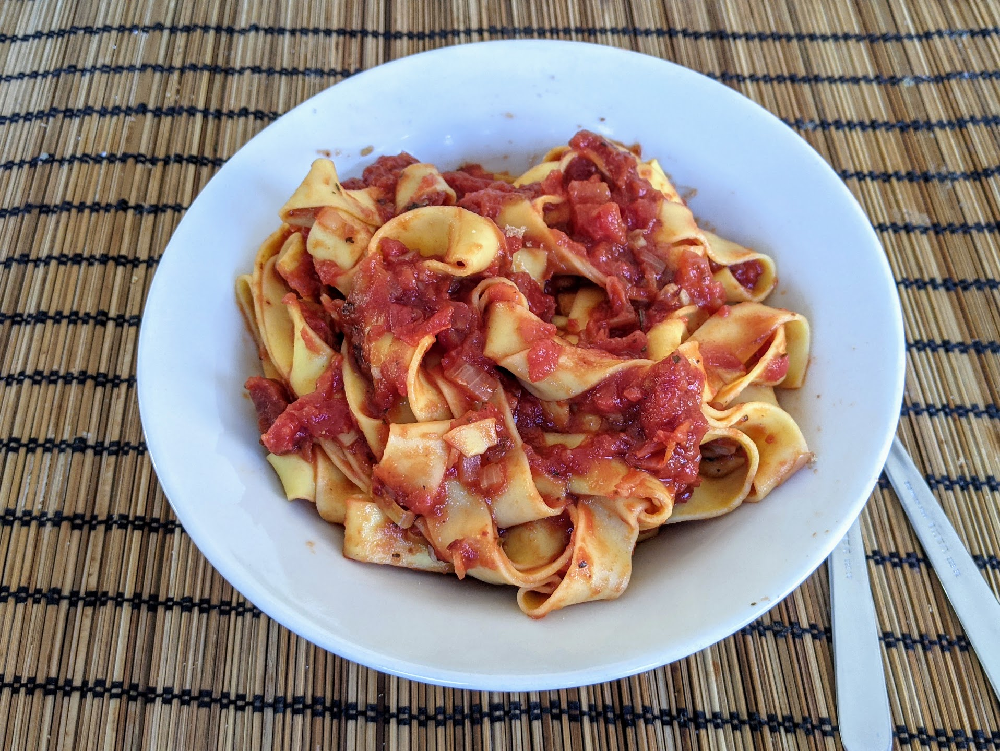

Pâtes aux tomates épicées

Pour 5 personnes :
- 600g de pâtes
- Deux conserves de tomates concassées (de 400g chaque)
- Deux gros oignons
- Une demi-douzaine de gousses d'ail
- Une demi-douzaine de petits piments séchés, genre piment oiseau ou pili-pili
- Une cuillère à soupe d'origan
- Une cuillère à soupe de thym, ou herbes de Provence
- Une cuillère à soupe de paprika
- Une cuillère à soupe de vinaigre balsamique
- Sel, poivre, huile d'olive
- Éplucher les oignons et les couper en tout petits bouts. Les faire revenir dans une casserole avec une quantité généreuse d'huile d'olive à feu fort, en remuant fréquemment, jusqu'à ce que ça brunisse bien. Ajouter un petit peu d'eau ou de vin si ça attache pour déglacer.
- Pendant que ça cuit, éplucher et couper l'ail en petits bouts, le rajouter dans la casserole. Couper les piments séchés en petits bouts et les rajouter aussi. Il faut que le tout soit vraiment bien cuit, si ça noircit un peu c'est pas grave.
- Ajouter le reste des ingrédients, et faire cuire à feu assez fort jusqu'à ce que ça réduise d'environ 25%. Ou bien, encore mieux, faire cuire le tout au moins 4 heures dans une mijoteuse sur réglage doux.
- Pendant ce temps, cuire les pâtes. C'est une bonne idée d'ajouter une ou deux cuillères à soupe du jus de cuisson des pâtes dans la sauce vers la fin, juste avant de servir.
Remarque : on peut évidemment varier la quantité de piment en fonction de à quel point on aime les plats épicés, mais je conseille de commencer par ces quantités, c'est surprenamment chouette quand ça a met un peu le feu dans ta bouche. Si on a pas de piments séchés, on peut en utiliser des frais, ou des en bocaux (mais cette dernière option change légèrement le goût).
Variante : pour une version originale, on peut ajouter le quart d'un citron confit au sel, une poignée d'olives égouttées et coupées en morceaux, et/ou deux
Retour à la liste des recettes